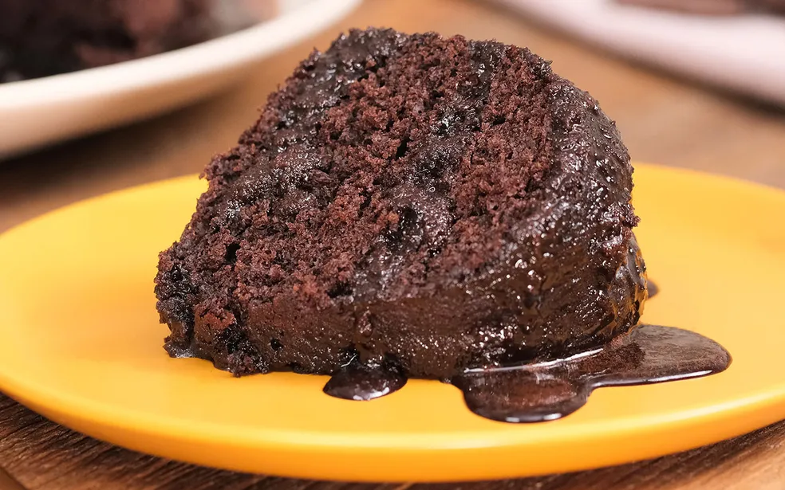

Voltar
Bolo de Chocolate
O bolo de chocolate é um queridinho dos brasileiros. Esta receita é fácil, simples e combina com um cafezinho no lanche da tarde.
Para preparar a massa do bolo, você vai precisar de chocolate em pó, farinha de trigo, açúcar, ovos, fermento em pó e óleo.
O bolo de chocolate fácil é finalizado com uma cobertura que deixa o bolo
bastante molhadinho e saboroso. Saiba como preparar a receita!

Ingredientes
Massa
- 3 Ovos
- 1 Xícara e Meia de chá de açúcar
- Meia xícara de chá de óleo
- 1 xícara de chá de chocolate em pó
- 2 xícaras de chá de farinha de trigo
- 1 xícara de chá de água quente
- 1 colher de sopa de fermento em pó
Modo de Preparo
Massa
- Em uma tigela, coloque 3 ovos, 1 e meia xícara de chá de açúcar, meia
xícara de chá de óleo, 1 xícara de chá de chocolate em pó e 2 xícaras
de chá de farinha de trigo. Misture delicadamente os ingredientes.
- Em seguida, adicione 1 xícara de chá de água quente, 1 colher de sopa
de fermento em pó e bata até ficar homogêneo.
- Transfira a massa para uma forma untada e enfarinhada com uma
mistura de farinha de trigo e chocolate em pó. Leve para assar em
forno preaquecido a 180 graus Celsius por 40 minutos.